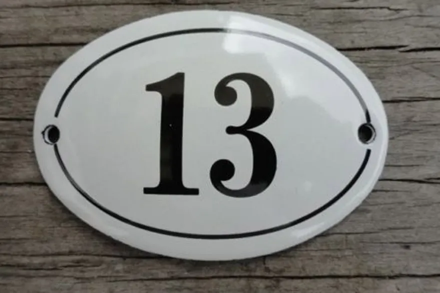

Bienvenid@ a NotiNews.
El canal con noticias random que nadie nos pidió.
No te cases ni te embarques: algunas curiosidades sobre el martes 13.
No romper un espejos, evitar cruzarse con un gato negro o pasar por debajo de una escalera, son
algunas de las recomendaciones -además de tocar madera o salir de casa
con el pie derecho- que todos sabemos de memoria para pasar un martes 13
sin sorpresas y ¡mucho menos mala suerte! Además, lo dice el refrán:
"No te cases ni te embarques. Ni de tu casa te apartes".
¿Pero te pusiste a pensar alguna vez cuál es el origen de esta creencia?
Hay diferentes historias que circulan a lo largo y a la ancho del planeta y
desde hace tiempo para explicar el miedo irracional que provoca este día en
muchos países, entre los que se encuentran España, Grecia y unos tantos de
América Latina, como la Argentina, México, Chile, Perú, Colombia y Venezuela.
Te contamos algunas curiosidades.

¿Por qué el día 13?
En la mayoría de los casos se explica por el rechazo que provocan el número 13 y el martes de forma
aislada. El 13
es considerado el número de la mala suerte por diversos motivos. Por ejemplo, en la última cena, eran 13
los
asistentes y fue Judas el último invitado y luego traicionó a Jesucristo. En la línea de la religión
cristiana,
también se puede ver que en el capítulo 13 del Apocalipsis se habla de la llegada del Anticristo a la
Tierra. Por su
parte, en la cultura escandinava -y en consonancia con el relato cristiano-, Loki, el espíritu del mal,
fue el
invitado n° 13 a la cena de los dioses en el Valhalla, una suerte de salón majestuoso donde se dirigían
los dioses
para sanar sus heridas de batalla y reencontrarse con Odín, el poderoso.
"Al número 13 se lo suele castigar y se le adjudican poderes malignos. Pero no es más que otro número.
En el Tarot,
por ejemplo, el arcano 13 está caracterizado con un esqueleto con una guadaña y, quienes no conocen su
significado,
se asustan muchos. Pero este arcano simboliza renacimiento, transformación, cambios. Claro, los cambios
y lo nuevo
dan un poquito de miedo. ¡Pero no es malo! Son comienzos",explica la especialista en Tarot terapéutico y
astrología,
Florencia Bertolini.
¿Y el martes?

Etimológicamente, la palabra proviene del planeta marte, relacionado con la destrucción, la sangre y la
violencia, además de ser el Dios de la Guerra en la mitología romana. El temor a este día también se debe a
la caída del Imperio Romano en Constantinopla, el martes 29 de mayo de 1453. De la misma manera, se dice que
la confusión de las lenguas en la Torre de Babel, también tuvo lugar un martes.
La tradición supersticiosa llega tan lejos que hoy ya se habla de la trezidavomartifobia, es decir, una
fobia que se caracteriza por el miedo extremo al martes 13. El temor está tan extendido que inlcuso algunas
compañías aéreas, como Iberia o Air France, eliminan la fila 13 de los aviones. Y eso no es todo. En algunos
edificios se pasa del piso 12 al 14 para evitar ataques de pánico. "Desde algunos países de Europa hasta en
casi toda Latinoamérica, son muchos los que sufren la fobia ante la unión del martes y el 13. Grecia, Chile,
Argentina o Venezuela son algunos ejemplos donde la mala suerte se apodera de ese día. Pero también hay
otras visiones. Así, en México los Mayas consideraban que el 13 era positivo, ya que lo relacionaban con las
fases de la luna", agrega Bertolini.
¿Un secretito para que la suerte no te abandone? Podés verter una cucharada de azúcar en un frasco de
vidrio. A continuación agregá un poco de romero y una rama de canela. Cuando tengas la mezcla lista, llevá
la preparación al fuego y utilizá los vapores para purificar el ambiente de la casa. Podés hacerlo tantos
días como creas necesario, hasta que tu suerte haya cambiado.
Fuente
de información